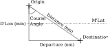

Plane Sailing¶
Plane Sailing is so called because we pretend the Earth is flat for the purpose of the calculation. Because of this, Plane Sailing is only accurate enough for distances under 500 nautical miles. It is necessary to have an understanding of the trigonometry rules for Right Angle Triangles (https://courses.lumenlearning.com/boundless-algebra/chapter/trigonometry-and-right-triangles/), so brush up on that if you’re not familiar before carrying on.
The Concept¶
We construct a right angled triangle using the D’Lon in minutes, and the Departure. In order to calculate the Departure we need a Latitude, so we use the mean (average) of the Origin and Destination Latitude, referred to as M’Lat. Our Right Angle triangle ends up looking like this, we always draw a line South or North from the Origin first, and then go East or West to the Destination.
In order to solve the triangle and get our distance we follow these steps:
Calculate the Difference in Latitude and Longitude (D’Lon and D’Lat) between the two points.
Calculate the Mean latitude (M’Lat) between the two latitudes.
Calculate the Departure using \(D'Lon_{min} * cos M'Lat\).
Using the tangent right triangle rule, calculate the Course Angle: \(\tan^{-1 }(Departure_{nm} \div D'Lon_{min})\).
Using the cosine right triangle rule, calculate the Distance: \(D'Lat_{min} \div \cos \text{Course Angle}\)
Example Question: A to B¶
You are sailing from position A: \(15° 37' S :: 174° 14' E\) to position B: \(17° 18' S :: 176° 25' E\). Calculate the course and distance covered between these two points.
D’Lon and D’Lat¶
Get the D’Lon and D’Lat between the two points:
Mean Latitude¶
Get the M’Lat by averaging the latitudes:
Departure¶
Get the Departure in nautical miles:
Course Angle¶
Now that we have two sides of our navigation triangle, we can work out the course angle using tangent right triangle rule:
The directions of the course angle are taken from the D’Lat, and then the D’Lon, in that order, because we always construct the triangle by going south or north first.
It’s pretty hard to steer to decimals of a degree so we’ll round the true course off.
Distance¶
Using the course angle we can now find the distance travelled (the hypotenuse of our navigation triangle) using the cosine right triangle rule.
Answer¶
Once you’re finished with a question you probably don’t need all the decimal points, so lets round the distance down to two places:
Question Generator: A to B¶
Next up we have Mercator Sailing.